[遊記] 夏季宜蘭二日遊(松羅、鴛鴦溪)
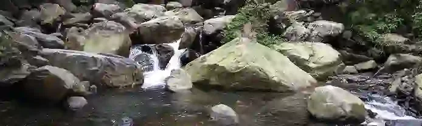
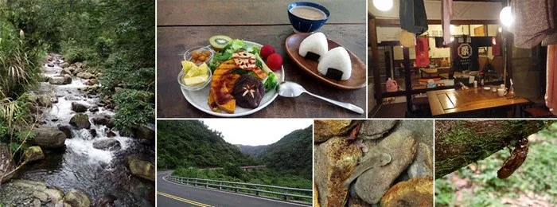
給忙碌人的宜蘭二日遊心得
- 多跟在地人交流、聽他們的建議修正行程XD
- 主要去了松羅步道及鴛鴦溪，住在一個叫月光莊的神祕地方。激推松羅步道，人少、水又清澈涼爽。
- 往梨山的客運也會經過松羅，這是googlemap沒有寫出來的。
- 吃很多東西但幾乎沒有食物照。東西都不錯，由於適合當下吃的東西被我放很久才吃或是在餓到不行的情況下進食，當下感受也難以做為參考。
我似乎沒寫過遊記，不知道他應該長怎樣才是好看的，不過我想，我寫出來大概像流水帳。
決定出發的原由及預先準備
七月初報名了羅東自然教育中心的夜間觀察，覺得當天來回有些可惜，就安排了宜蘭兩天一夜的行程。其實沒有很認真規劃，只有個目標：「走一條自然ㄧ些、觀光客少的步道。」希望可以自己趁著這兩天可以好好休息、放空。
出發前到處問人，但我只能靠大眾交通工具，受限許多。J推薦南澳的朝陽步道，我覺得挺不錯的還能看到海；Y說可以去松羅步道，然後Y跟L都說朝陽「林相還好」……他們真的很嚴格，不過這樣很好XD
此外，住在宜蘭的Y借給我他停在宜蘭車站的單車，推薦我去騎龍潭湖或是沿著河騎。我稍微規劃一下，決定第一天去步道，第二天再靠腳踏車移動。
住宿方面，想住住有趣的背包客棧（雖然不愛社交但又想碰碰陌生人），又很散漫地沒認真地搜尋，才在出發前一晚的凌晨在airbnb看到一個叫「月光莊」的地方（搜尋過後覺得相關資訊滿奇妙的XDD）
「有一個臉友有按讚他的粉專欸！或許可以吧！」就這麼訂了，填了月光莊的申請表單。
我也曉得前一晚夜裡才訂住所說不定會無法讓我入住（例如客滿），但也覺得：「宜蘭一定到處都有地方可以住啦」地放心上床。
D1：新店→羅東→宜蘭→松羅→宜蘭(晚餐及住所)
平日到松羅步道的客運「宜蘭←→松羅」車次只有三班，清晨五點多、十點半、下午五點多。（不過後來發現不止這台可以到）
我約莫快8點時從新店出發，9點出頭到羅東，再搭火車到宜蘭時約莫9點半，距離發車還有快1個小時。於是坐在車站外的長椅吃著我用矽膠袋裝的早餐——地瓜與水煮蛋。將矽膠袋洗乾淨，買了「正常水煎包」當午餐，我覺得他們包得好隨便，但我怕時間不夠亂繞買別的就買了。
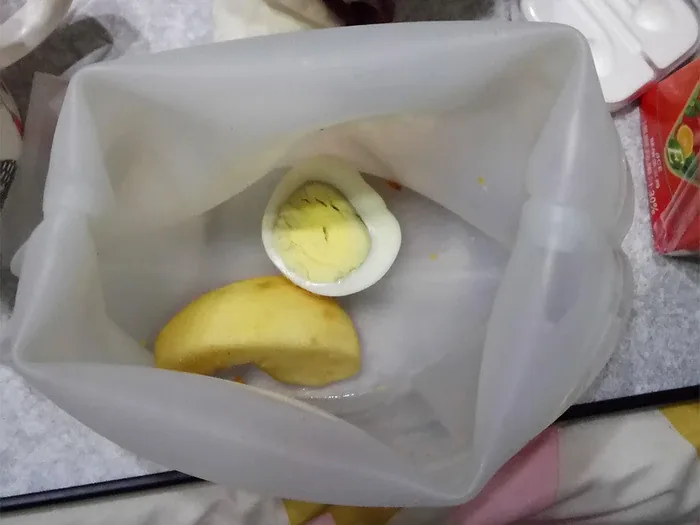
（本矽膠袋為當事矽膠袋，但內容物不是。是的，我只是想跟大家介紹矽膠袋是個好用的東西）
十點半搭上車，不到一個小時就抵達了。
路線主要是這樣：台七線松羅公車站->管制站->登山口->步道終點(巨石瀑布)
從公車站走進去，路邊鐵皮住家兩條狗沒綁繩吠超兇= =
當下完全覺得「WTF！」我走這裡又不是你家！！！是你家旁邊！！！
試著用力踩地板發出聲音發現他們會怕，就多踩兩下威嚇他們，讓出路我就繼續往前走。（他們如果不怕我也不知道該怎麼辦，但都來了哪有叫我因為這種鳥原因撤退的道理！）
松羅公車站->管制區（約1.4公里），約走了30分鐘，這段非常無聊，比較適合開車進去。結果我這段路花了不少時間在跟同事講電話跟寫信，說好的休假咧XDD（好啦我心甘情願）
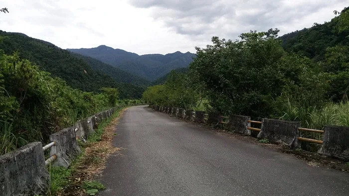
（很無聊的柏油路段，幸好沒什麼太陽）
到了管制站，手機差不多沒訊號了。管制站這邊有洗手間，不知道是不是因為平日，沒人。
從管制站->登山口（約1.5公里），約走了30分鐘。
生物開始多了起來，特別從這裡開始就看到很多不同種類的蝴蝶，我覺得整個步道約莫有5-10種蝴蝶。也看到了斯文豪氏攀木蜥蜴兩隻，這個在步道裡也滿常見的，而且都不怕人。
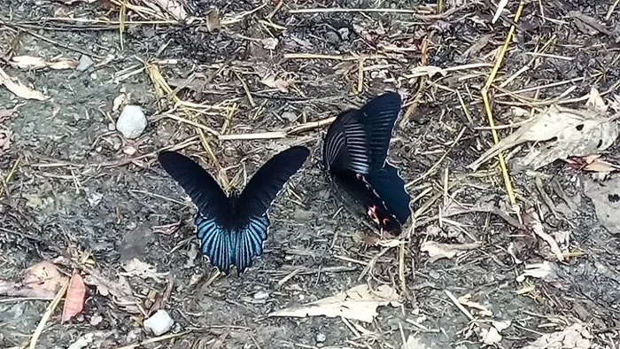
兩種不一樣的蝴蝶
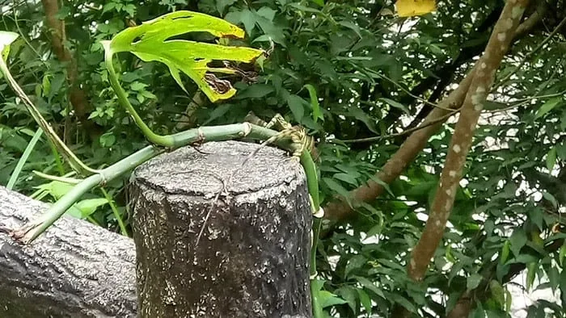
突然逃走的攀木蜥蜴
登山口->步道終點(巨石瀑布）（約2公里），約走了1小時。
但途中很多下溪的地方，我太興奮就一直停下來摸摸水，而且停滿久的，所以也不確定確切走到終點要花多少時間。順帶一提，路途中所有遇到的人加起來不超過20個。
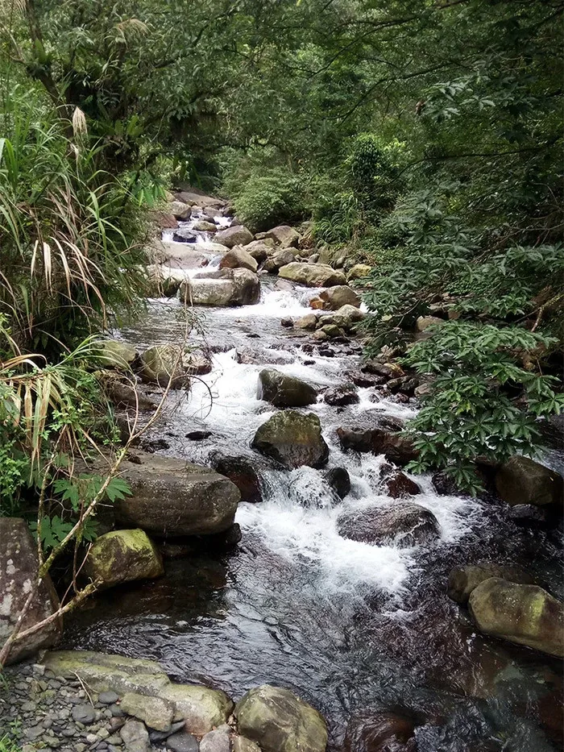
步道途中有好幾個可以摸到水的點，心志不堅的我停下來不少次
抵達步道終點時大概已經下午一點多，那裡只有一群約5、6個人的長輩，另外這裡不是大家想像中的「瀑布」，就是這個比較上游的地方而已（？）。我找了個舒服的地方坐下來，脫掉鞋子泡腳，開始吃起爛掉的小籠包，我覺得很好吃，因為我快餓死了。
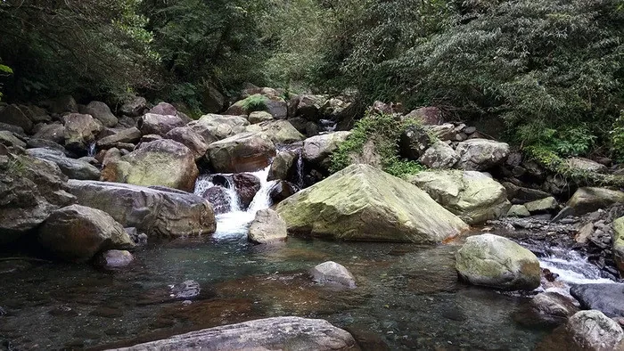
終點「巨石瀑布」
在那裡待了兩個小時，很認真地觀察水裡的生物，水清澈到能夠看到水底、冰涼到有點讓人發冷。
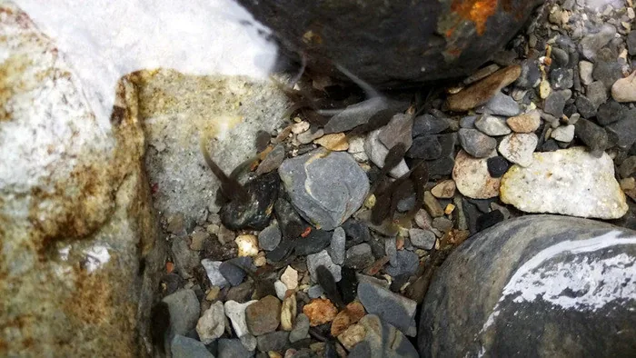
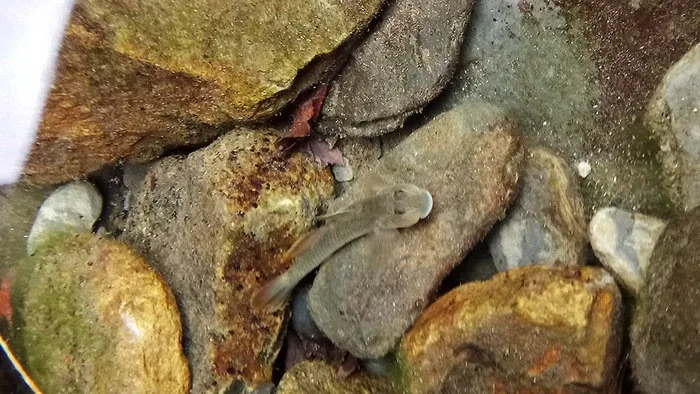
上：蝌蚪，下：明潭吻鰕虎。超可愛～水清澈地很誇張！
後來下山，走到台7線我好像只花了30-40分鐘，出乎意料地快。手機也終於有了訊號，我直接撥了電話給「月光莊」，對方說：「可以住喔！」然後問我在哪裡、怎麼去，請我就先到宜蘭碰面。我們傳了訊息，確定了地址。
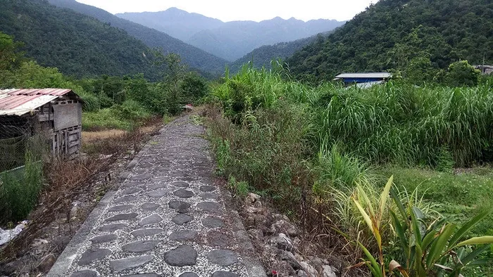
下山時繞了往社區的路
我在台七線上在當地的商店買了罐水坐在外頭的簡便桌椅，隔壁架著布棚賣著一顆才200元的大西瓜。那時4點多，而我準備坐的車是六點半的回程。後來，跑去隔壁蹭了兩三塊切片西瓜吃，很甜很好吃（葉配一波），跟媽媽老闆閒聊，說西瓜是朋友種的幫忙賣，而她今年國中畢業的女兒說我長得很像她的英文家教，拿出了照片讓我看，確實有一點相似的氣質XD
我說我明天要去龍潭騎車，媽媽老闆說那邊有一個大溜滑梯，以前會帶小朋友去玩。
我說接著想去壯圍，媽媽老闆為難地說：有點距離喔。然後推薦了一些在地人會去的地方。
我說我要搭六點半左右的客運，媽媽老闆說五點半好像有一班呢！還問了隔壁商店的老闆，但大家好像也不太確定。
約莫聊了半個小時，五點多時突然來了一台自「梨山」的客運正好被紅綠燈攔下，媽媽老闆指著說：「那台好像可以去宜蘭，你快點過去！」
我匆忙地拿起包包，來不及回頭道謝跟告別跑了過去，那時已經綠燈了，我在對街試著向客運揮手，他好友善地停在路邊等我過馬路上車，然後說著：「今天梨山那邊交通管制、所以比較晚到」云云。
上車後睡死，忘記跟民宿老闆說我會提早到，後來快抵達時聯繫了一下，就前往了指定地點「放唱片音樂空間」，一個很神奇的空間（後來查了才發現是一個要事先預約的地方），好像只有少數人才知道的祕密基地一樣，老闆以前是錄音師，店裡兩顆巨大的喇叭，是以前美國的電影院所使用，在空間裡面，播放出來的聲音很有擊中心臟的感覺。
稍作休息一下，便和民宿老闆及一個環島中的先生一起去吃晚餐。先去了「可為烘培」，老闆似乎每次都會帶住宿客人來這裡，為此可愛的店員妹妹多送了一些脆棒給我們（給民宿老闆，不過後來幾乎被我吃光了哈哈哈）。接著去放唱片老闆推薦的「餅天下」吃牛肉捲餅，接著去吃就位於隔壁的麵店「黃記福州麵」，環島先生說他每次來這裡一定會去吃，我一坐下來發現幾年前和朋友來宜蘭正吃過這間店！和環島先生在路口告別後，我覺得需要以一個甜品做結，民宿老闆便帶著我去吃了「涼心冰店」，花生和牛奶口味，100分的滿足後，回到放唱片。
回去時，遇到一個在紅磚屋工作的女生（我記得她說她住礁溪，家裡沒有熱水器XD），以及一個突然放棄日本的一切跑到台灣的日本人（好像是民宿老闆以前去日本工作時認識的），稍微打個招呼他們就離開去吃飯了。留下來的，是一個本來在經營民宿、現在在學習茶道的人，他和民宿老闆、放唱片老闆開始各種閒聊，期間也不時更換著播放的唱片。
其實他們聊什麼，我不記得了，雖然我也幾乎不加入對話，但我覺得那段時間是很舒服的時光。
唯一印象深刻的是，放唱片老闆說，所謂的搖滾不只是重金屬搖滾，這種↓其實也是搖滾。（當下聽覺得超有fu）
後來待到快11點才離開，我騎著Y的腳踏車，跟著民宿老闆的摩托車燈，騎出熱鬧的市區，沿著稻田，前往「月光莊」所在的深溝村。
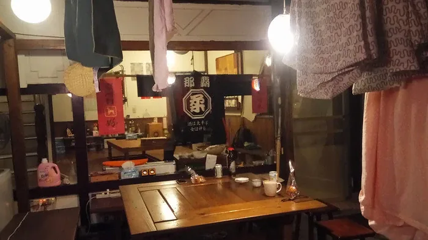
很日式的風格，印象中第一任老闆是沖繩人？
「月光莊」 的一側連著住家，另一側則是稻田。老闆簡單替我介紹空間，我們便在外頭喝起了啤酒、泡盛，配著稍早的脆棒XD。隔天老闆要跟朋友去花蓮參加海或市集，於是他的朋友夫婦便過來聊聊，結果發現先生曾經是其他專案的工作夥伴，世界真小！
大概快一點時，大家也回去休息了。進屋前，看見對面路邊閃著手電筒的燈，過去詢問發現三四個阿伯在路邊的水溝抓螃蟹，用蚯蚓吸引他們從底下的縫隙爬出來。水溝乾淨到有螃蟹可以抓，覺得實在太酷了！
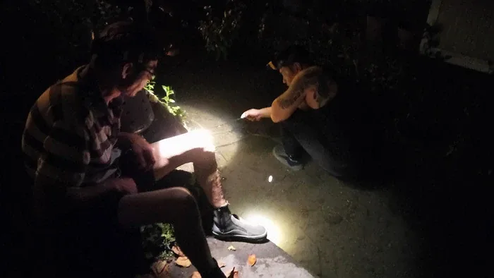
耐心引誘螃蟹的阿伯們。我記得他們已經抓到三四隻很大的，有秀給我看
原本入住的只有我（似乎本來不打算接客人XD），但在喝酒閒聊時老闆接到電話說有朋友要來住，大概會在一點多抵達，那時候我已經入睡了，是在醒來才看到對床多了兩個人XD。民宿老闆也跟客人一樣睡在上下舖的其中一個位置，我記得我付錢給老闆時，就只是從錢包抽出五百元，走到隔壁床遞給他，各種想像中應該有要check in儀式就這麼結束了……！
D2：宜蘭→鴛鴦溪→宜蘭→羅東(參加活動)→新店
大概是實在太累了，意外地一覺到天亮。快10點時出發往推薦的蔬食早午餐店「一簞食」。準備出發前往海或的老闆等人也約在這裡碰面，與一個和我同一天生日、在桃園做烘焙工作室的女生打過招呼。
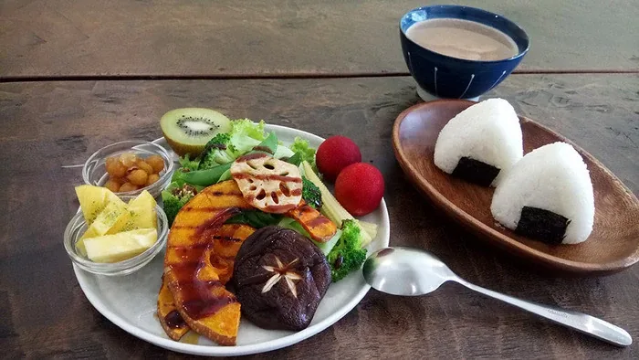
一簞食的套餐，印象中兩百多元。看起來很豐盛，本以為可能將將好飽，沒想到吃到很撐！每一樣都很好吃，不會吃到後來覺得很膩或很單調。
我們在正午告別，很幸運遇到的大家都是好人。
當我跟民宿老闆說我要去壯圍時，他也說「那邊有點遠」於是推薦我去一個叫「圳頭」的溪邊泡泡水，位於前往雙連埤的路上。
我遵循著「在地人是對的」法則，放棄了壯圍。先去市區買餡餅跟韭菜和當午餐、麻糬當甜點，一路往圳頭前去。烈日跟緩坡都在折磨著我的意志力，最後騎了一個半小時，在民宿老闆提供的googlemap地點並沒有看到什麼溪水，感到絕望滿點QQ（後來再查，我似乎再往前騎一點就到了，但我也當下連那麼一點都不想努力了……Orz）
最後在最近的「鴛鴦溪」休息。相對於前一日松羅的溪水，這邊真是略遜一籌XD
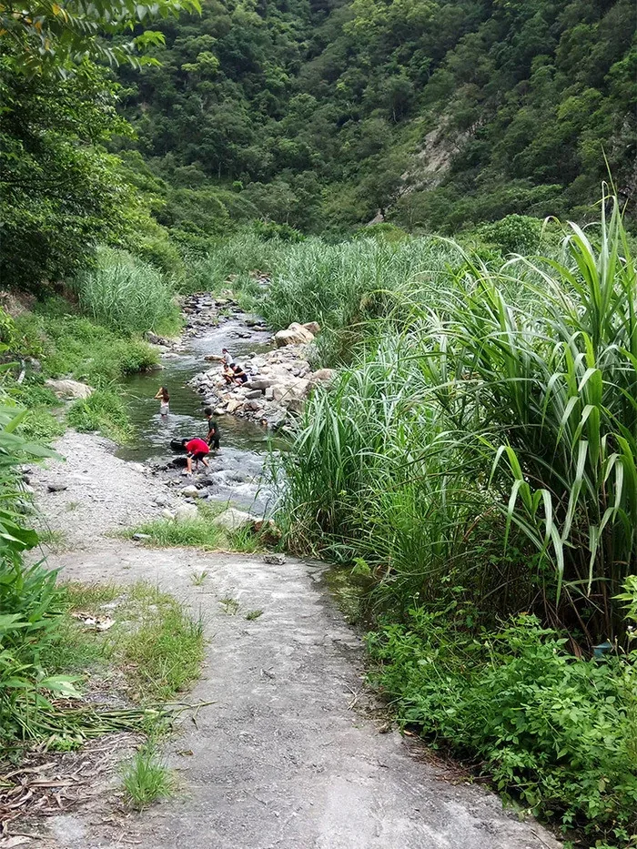
從產業道路的一個斜坡下去，就是鴛鴦溪。有帶換洗衣物應該也是可以玩得滿開心的啦~
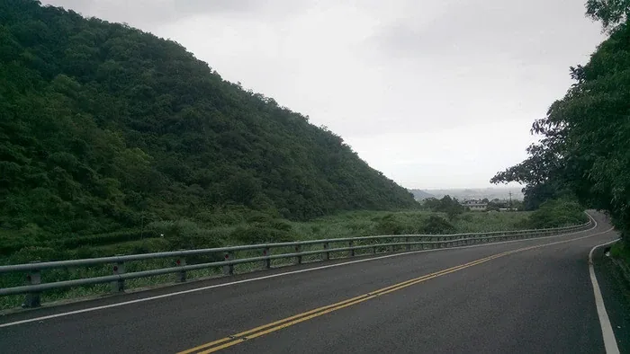
飄細雨的雙連埤產業道路QQ
大概只待了一個半小時便離開。還在鴛鴦溪時便已下起了毛毛雨，回程途中下起了大雨（大概是剛好過「要撐傘」標準的那種雨），在路邊公車站等了15分鐘雨勢也沒怎麼減弱，最後還是冒雨騎回宜蘭，又狼狽又瘋狂。
進入市區時大概四點半，僅去吃了碗豆花，便停車搭火車往羅東去，準備參加六點半的活動。（要不是晚上有活動，實在很適合從鴛鴦溪下了山後，去吃點點心、晚餐，休息一下就可以回家了～～～）
晚上的活動是羅東自然教育中心辦的「夜探林場」，先前曾經參加過一兩次其他地方辦的夜間觀察活動，主要是走在比較自然、無人類打擾的地方，所以能看見的東西很豐富。因為這樣的經驗與期待，對於羅東林場的活動產生了預期上的落差，但仔細想想園區位於人類住所附近，沒有少見的生物似乎也是正常的事情，不過也因為其地處的便利，帶小朋友來觀察、學習正確地認識生物，還是很值得的。八點半活動結束，徒步回到客運站就往台北回去啦～（累炸）
店家資訊
月光莊 背包客棧
宜蘭縣員山鄉惠民路291號
https://www.facebook.com/gekkousou.yilan/
放唱片 音樂空間（預約制）
宜蘭市國榮路55巷1弄2號
https://www.facebook.com/fansrecord/
羅東自然教育中心@羅東林業文化園區
宜蘭縣羅東鎮中正北路118號
https://www.facebook.com/luodong/
可為烘培
地址：宜蘭縣宜蘭市健康路三段99號
營業時間：11:30–20:30（全年無休）
餅天下
地址：宜蘭縣宜蘭市文昌路11號
營業時間：11:30–13:30，17:00–19:30（週日休）
黃家福州口味麵店
地址：宜蘭縣宜蘭市文昌路7號
營業時間：9:00–20:00（全年無休）
涼心冰店
地址：宜蘭縣宜蘭市神農路二段63號
營業時間：11:00–22:00（全年無休）
一簞食
地址：宜蘭縣宜蘭市進士路101號
營業時間：08:00–14:00（週日、一休）
楊記餡餅
地址：宜蘭縣宜蘭市舊城西路71之2號
營業時間：09:00–19:30（週一休）
古意人養生米粿
地址：宜蘭縣宜蘭市康樂路140號
營業時間：06:30–17:00（週二休）
王品豆花
地址：宜蘭縣宜蘭市新民路121號
營業時間：09:00–18:00（週日休）
留言
電子郵件不會公開，只用來辨識留言者。第一次留言會先經過審核，之後同一個電子郵件的留言會直接顯示。本留言區以 Cloudflare Turnstile 防止垃圾留言。